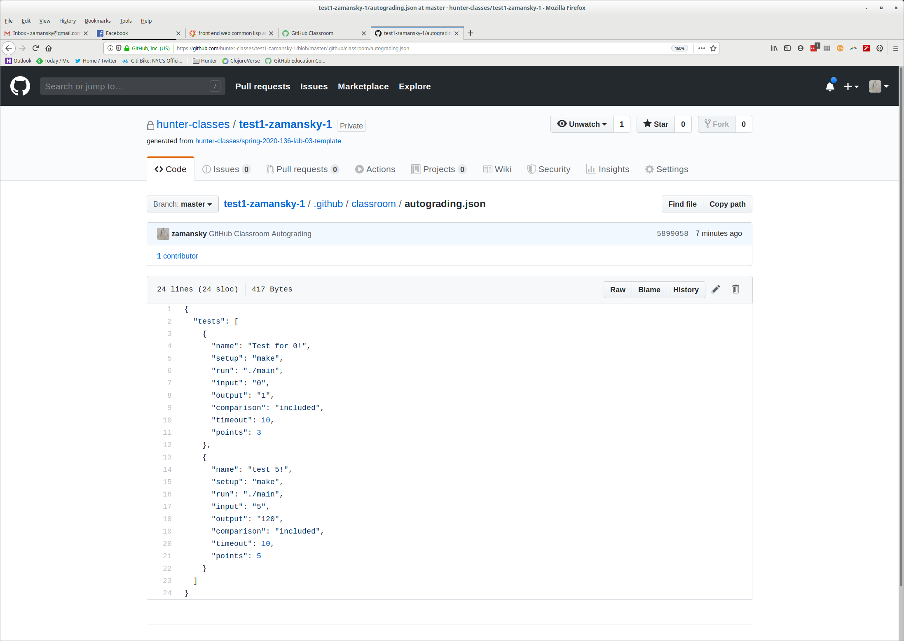
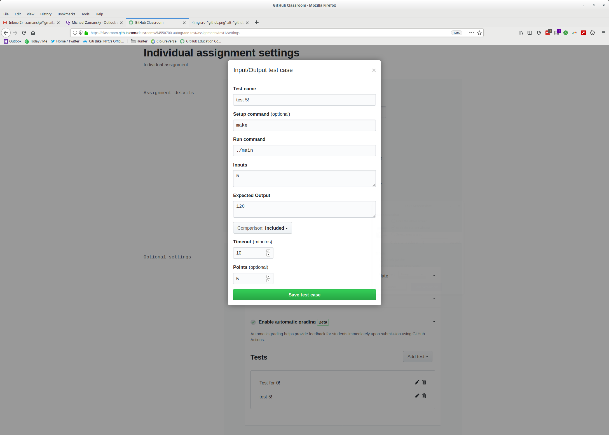
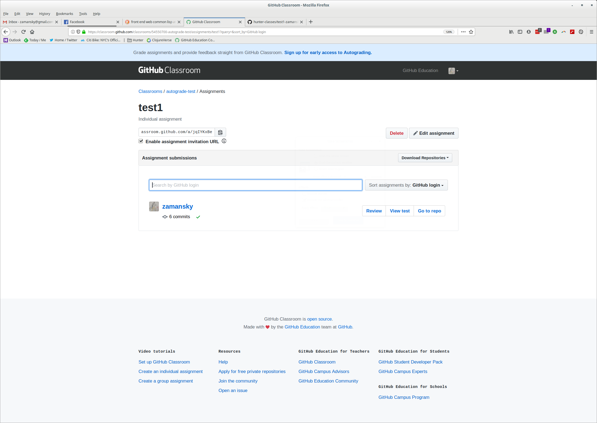
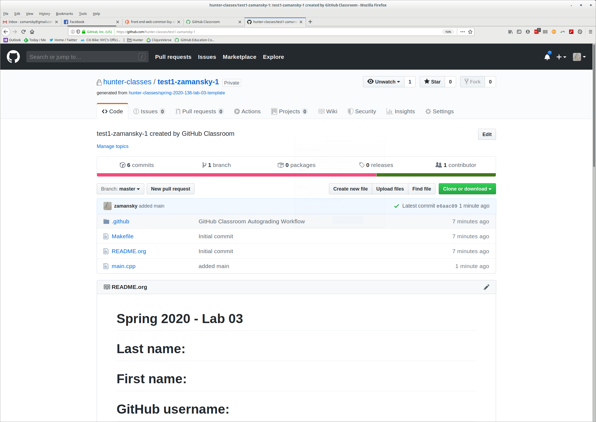
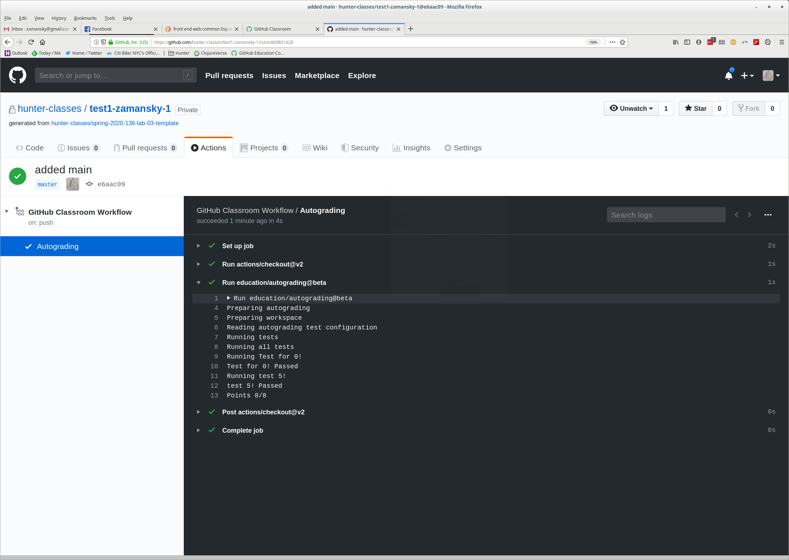
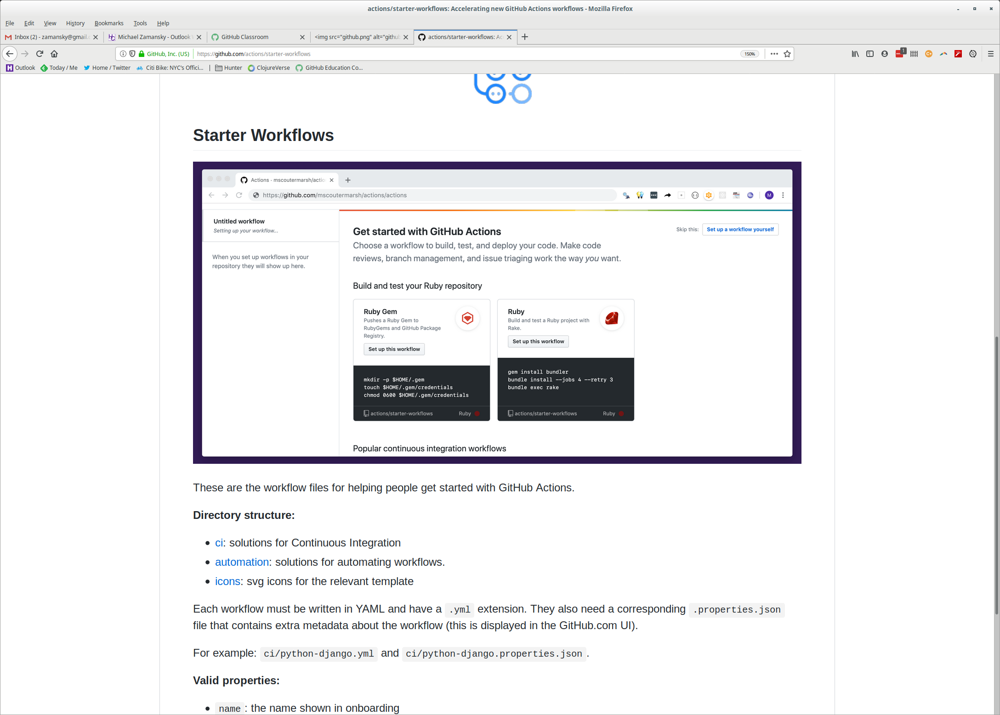

Taking Your Students from GitHub
Newbies to Pull Request Masters
Mike Zamansky @zamansky

Why are we here?
- Sharing materials with students is hard
- Project collection / grading / feedback is hard
- Students should learn real world tools
- learning Git on top of everything adds to cognitive load
- but it's worth it!!!!!!!
History of submitting work
- blackboard / rexos
- printouts / floppys

What it can be
- Version control
- Automated distribution and collection
- Communication and feedback

GitHub to the rescue
- The good
- Version control goodness
- Industry standard tool
- Replaces locked in CMS functionality
- Gives us additional student insights
- great platform for ancillary things (open source, code reviews etc).
- The bad
- learning curve
- scary

Ease them in

The steps
- Get them on to GitHub
- Set up SSH Keys
- Important commands:
git clone https://github.com/hunter-classes/235
cd 235
git pull <-- each time
git checkout <-- (maybe)
Their first assignment

Concepts and commands
git add filename
git commit filename -m "message"
git mv filename
git rm filename
git push
git checkout
RTFM


When codes collide

Merging
Auto-merging a CONFLICT (content): Merge conflict in a Automatic merge failed; fix conflicts and then commit the result.
<<<<<<< HEAD echo "Hello World!" hello hello worddddddddd ======= echo "Hello World" >>>>>>> newbranch
Grading and providing feedback
- Why not autograders?
- What's better?
Test frameworks
Language Framework Python Unittest C++ doctest / catch

- Give them tests or add some later.
- Student created or teacher created.
Challenges and Opportunities
- Challenges
- Students code to the tests
- Students fail to run the tests
- Opportunities
- Students become more introspective about their code
- Students learn real world software engineering sensibilities
The road to CI
- GitHub Classroom Autograding beta


Student and instructor feedback



It's just GitHub!!!
Other benefits
Issues

Stats and Graphs

Commit History

Code with friends (pull requests)
- Do a code review